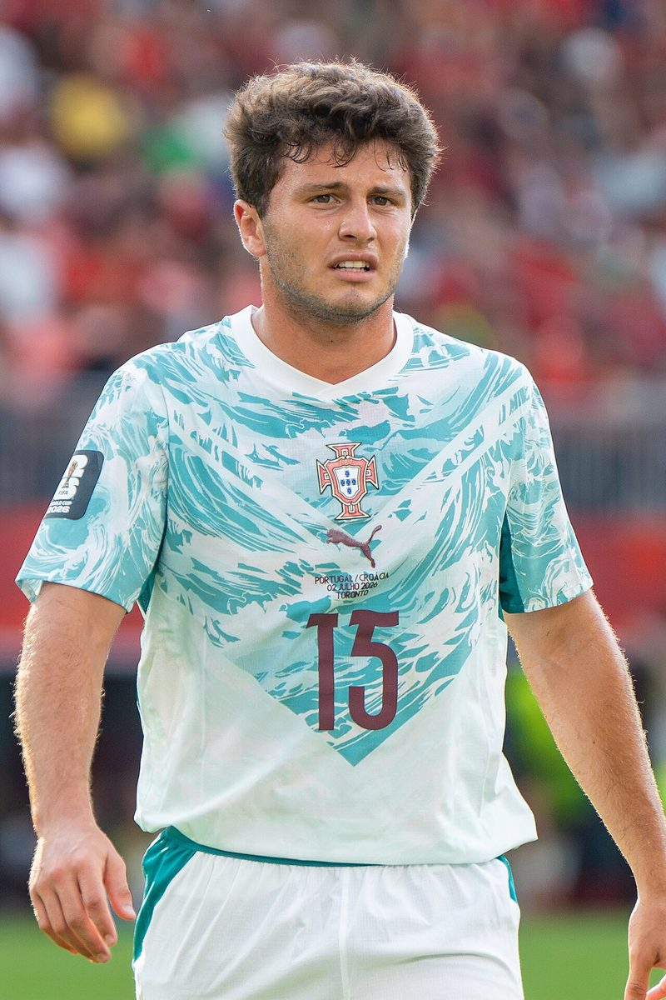

17分钟连进四球：巴黎圣日耳曼6比0横扫比利亚雷亚尔，欧冠夺冠热门拉开差距
巴黎圣日耳曼和皇家马德里是仅有的两支四战全胜的球队，阿森纳、科莫和巴塞罗那紧随其后。

有些比赛叫大胜，而周二晚上巴黎圣日耳曼在西班牙踢出的，是另一个级别的表演。
在比利亚雷亚尔的陶瓷球场，巴黎开场17分钟就以4比0领先。若昂·内维斯（João Neves）第9分钟破门，德西雷·杜埃（Désiré Doué）三分钟后再下一城，森尼·马尤卢（Senny Mayulu）紧接着又进一球，法比安·鲁伊斯（Fabián Ruiz）在第17分钟扩大比分。下半场鲁伊斯梅开二度，大卫·博利（David Boly）在比赛还剩12分钟时锁定6比0的胜局。
数据同样说明一切：巴黎控球率达71%，射正12次。比利亚雷亚尔门将做出六次扑救，仍然丢了六球。

两支全胜球队
四轮过后，只有两家俱乐部保持全胜：巴黎圣日耳曼和皇家马德里。两队同积12分，巴黎凭借净胜球优势（+15）排名第一。
皇马的第四场胜利来之不易。周三在雅典，雅典AEK两度领先。裘德·贝林厄姆扳平第一球，基利安·姆巴佩扳平第二球，费德里科·巴尔韦德在补时阶段打进制胜球，皇马3比2逆转。
紧随其后的是积10分的阿森纳，然后是客场9比1大胜朗斯、积9分的科莫，以及3比0击败阿斯顿维拉、同样积9分的巴塞罗那。

两种取胜方式
巴黎的表现建立在强度与控制之上。他们年轻的中场和锋线球员从开场就高位逼抢，全队传球成功率达91%，比利亚雷亚尔始终没有机会稳住阵脚。
皇马则以另一种方式取胜。他们并不总是占据绝对优势，但总能找到赢球的办法，就像在雅典那样。如果两队的赛季都按计划进行，他们或许会在最关键的时刻相遇。联赛阶段进行到第四轮，这两支球队已经立下了所有人都要追赶的标准。